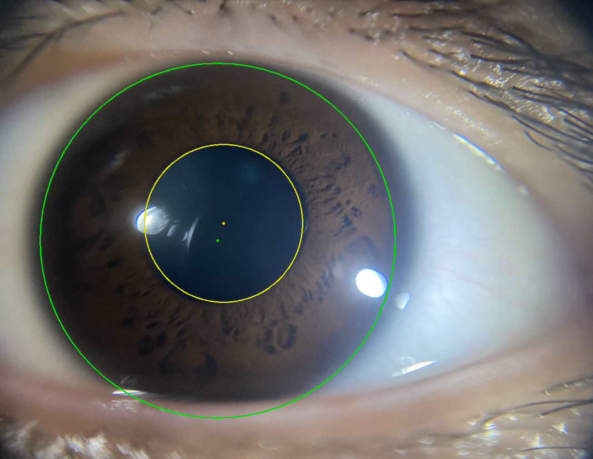
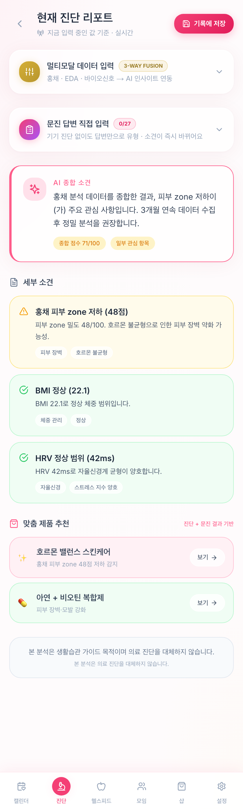
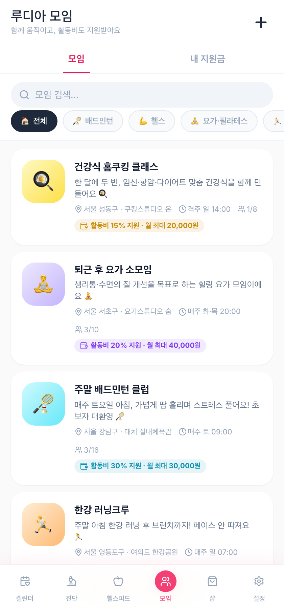

제가 왜 LUDIA를 만들게 되었는지, 어떤 생각으로 이 서비스를 설계했는지,
그리고 지금 앱에서 무엇을 할 수 있는지를 이 문서에 담았습니다.
01 · WHY I STARTED
“건강 관리의 시작은, 내 몸을 제대로 이해하는 것입니다”
의학을 전공하며 사람의 생리 메커니즘과 자율신경, 대사 과정을 연구하면서 수많은 신체 데이터를
접했습니다. 그리고 한 가지 안타까운 반복을 목격했습니다. 수많은 사람들이 건강을 위해 노력하지만,
정작 자신의 몸이 보내는 신호와 진짜 원인은 모른 채 무작정 몸을 맞추려 한다는 것이었습니다.
이유 없이 머리가 빠지거나 피부 질환이 생기고, 원인을 알 수 없는 소화불량이나 생리통, 만성 피로에
시달릴 때 우리는 당장 눈앞의 증상만 끄기 쉬운 솔루션을 찾습니다. 하지만 자율신경, 장내 환경,
호르몬 등 사람마다 불균형이 시작된 지점은 전부 다릅니다. 남들이 다 하는 식단이나 운동 기법이
나에게는 오답이 될 수 있는 이유입니다. 나에게 맞지 않는 케어는 결코 지속될 수 없습니다.
저는 사람들이 막연한 오답 노트를 반복하지 않도록 돕고 싶었습니다. 나에게 찾아온 증상의 원인을
먼저 다각도로 이해하고, 그에 맞춰 나만의 식단과 운동, 일상 케어를 스마트하게 해나갈 수 있는
‘내 몸 이해의 길잡이’가 되어주고 싶었습니다.
LUDIA는 이 마음에서 출발했습니다. 실질적인 도움을 주는 도구를 만들기 위해 직접 개발 환경을
구축하고 프로토타입 앱을 하나씩 완성해 가고 있습니다.
“진짜 변화는 내 몸을 바르게 이해하는 것에서 시작됩니다. 이제 나에게 딱 맞는 방법으로 제대로 된 케어를 시작해보세요.”
02 · WHAT LUDIA BELIEVES
몸은 증상의 합이 아니라, 하나의 회로입니다
LUDIA는 그리스어로 재생(Regeneration), 치유(Healing), 빛나는 통찰(Luminous Insight)을
뜻합니다. 저는 몸을 따로따로 고쳐야 할 증상의 목록이 아니라, 하나의 축이 무너지면 전체가
연쇄적으로 흔들리는 유기적인 회로라고 생각합니다. 그래서 LUDIA는 겉으로 드러난 증상 하나하나를
쫓기보다, 그 증상들을 연결하는 첫 번째 원인을 함께 찾아가려 합니다.
01신경계 & 자율조절 축무너지면 불안·불면·브레인 포그로 이어져요.
02에너지 & 대사 축무너지면 만성 피로·체중 증가·대사 저하로 이어져요.
03순환 & 혈류 축무너지면 부종·냉증·두피와 피부 트러블로 이어져요.
04점막 & 장 환경 축무너지면 소화불량·장누수·만성 염증으로 이어져요.
05해독 & 배출 축무너지면 피부 트러블·호르몬 불균형·염증 반응으로 이어져요.
LUDIA의 12개 케어 카테고리는 결국 이 다섯 가지 축 중 어디서, 어떻게 불균형이 시작됐는지를
각자의 방식으로 풀어낸 것입니다.
02 · THREE PROMISES
세 가지 약속
01
WHOLENESS
전인적 치유
하나의 증상만 보지 않고 신체 신호, 자율신경, 생활습관을 함께 읽어요.
02
PREDICTABILITY
예측 가능한 관리
비침습 측정으로 병원에 가기 전, 내 몸이 보내는 신호를 먼저 확인해요.
03
PRECISION
정밀한 맞춤
같은 탈모, 같은 다이어트도 사람마다 다른 원인으로 나누어 접근해요.
02 · WHY THE IRIS
왜 홍채인가

실제 스캔 화면 — 동공·홍채 경계를 자동으로 감지해요.
WHY THE IRIS
홍채는 자율신경계가 말초 조직과 가장 가깝게 맞닿는 신체 부위입니다. LUDIA는 이 홍채의
표현형 데이터에 문진·생활습관 데이터는 물론, 현재 복용 중인 약, 과거 진단명, 과거 수술 이력까지
함께 읽어 들여요. 이 모든 지표가 종합적으로 작용해, 지금 몸 안에서 일어나고 있는 변화를
하나의 원인으로 좁혀주는 결과값이 만들어집니다.
감지된 홍채를 펼쳐 조직의 결과 패턴을 분석해요.
02 · EPIGENETICS · THE SCIENCE
DNA 배열을 넘어선 생물학적 스위치
유전체(Genome)는 악보일 뿐, 연주(Epigenome)는 환경이 결정합니다.
인간의 DNA 순서(Genomic Sequence)는 태어날 때 결정되며 쉽게 변하지 않습니다. 하지만 DNA 위에는
유전자 발현을 조절하는 ‘후성유전학적 표지(Epigenetic Marks)’가 존재합니다. 식단,
자율신경계 밸런스, 대사 산물, 만성 스트레스 같은 외부 환경 자극은 Cell-signaling 경로를 통해 DNA
및 히스톤 단백질에 화학적 변형을 일으켜, 동일한 DNA를 가졌더라도 특정 유전자가 활성화(On)되거나
침묵(Off)하게 만듭니다.
유전자 발현을 조절하는 3가지 핵심 메커니즘
01DNA 메틸화 DNA Methylation프로모터 부위에 메틸기(–CH₃)가 결합하면 RNA 합성효소의 접근이 차단되어 유전자
발현이 억제(OFF)돼요. 올바른 영양·대사 케어는 질병 관련 유전자의 메틸화를 유도해 스위치를 꺼요.
02히스톤 변형 Histone Modification히스톤 단백질이 아세틸화되면 응축 구조가 풀리며 유전자 발현이 촉진(ON)돼요. 수면, 스트레스,
장내 미생물 대사산물(SCFA)이 히스톤 구조 변화에 직접 영향을 미쳐요.
03비번역 RNA 조절 Non-coding RNA / microRNAmicroRNA는 전사 후 단계에서 타깃 mRNA의 분해를 유도해 염증 반응이나 신진대사 유전자 발현을
미세 조정해요.
02 · EPIGENETICS · REVERSIBILITY
후성유전학적 가역성과 맞춤형 케어의 필요성
“유전자 변이는 되돌릴 수 없지만, 후성유전학적 변형은 가역적(Reversible)입니다.”
🔴 질병 스위치의 켜짐 (Pathological ON)
가족력이 없더라도, 나에게 맞지 않는 식단과 만성 자율신경 불균형이 지속되면 대사·염증 관련
유전자 스위치가 켜져 이유 없는 탈모, 대사증후군, 만성 피부 질환으로 이어져요.
🟢 질병 스위치의 꺼짐 (Epigenetic OFF)
고위험 유전인자를 보유했더라도, 내 신체 메커니즘에 최적화된 맞춤형 식단·운동·라이프스타일
Intervention을 제공하면 켜져 있던 질병 유전자 스위치를 다시 끌(OFF) 수 있어요.
LUDIA는 단편적인 증상 완화를 넘어, 후성유전학적 스위치를 긍정적인 방향으로 조절(Epigenetic
Modulation)할 수 있도록 개인의 신체 메커니즘을 다각도로 분석합니다. 나에게 딱 맞는 케어를 만날 때,
타고난 유전적 한계를 넘어 지속 가능한 건강을 만들어갈 수 있습니다.
02 · EPIGENETICS · 4 EXAMPLES
몸 곳곳에서 일어나는 스위치 작용
비만 및 대사증후군Obesity & Metabolic Syndrome
비만 유전자(FTO, LEP 등)는 식탐·지방 축적을 유도하지만, 식단·수면·자율신경
밸런스에 따라 지방 소모 유전자(UCP1)의 아세틸화 수준이 달라져요.
미토콘드리아 에너지 생성 유전자와 코르티솔 수용체 유전자(NR3C1)의 후성유전학적
변형에 의해 결정돼요.
🔴 ON — 만성 스트레스 → 피로 회복 유전자 스위치 꺼짐, 쉬어도 안 풀림.
🟢 OFF — 자율신경 밸런스 케어 → 미토콘드리아 활성화 유전자 재점화.
생리통 · PCOS · 여성 질환Gynecological Health
에스트로겐 수용체(ESR1/ESR2) 유전자의 메틸화 비율에 따라 호르몬 민감도와
자궁 내막 염증 반응이 달라져요.
🔴 ON — 내분비 교란·영양 불균형 → 극심한 생리통, 자궁 내막 염증.
🟢 OFF — 호르몬 대사 경로 교정 → 규칙적이고 통증 없는 생리 주기.
02 · EPIGENETICS · HAIR LOSS
탈모 유전자, 후성유전학으로 다시 보기
탈모 유전자를 가졌다고 해서 모두가 머리가 빠지는 것은 아닙니다. 안드로겐 수용체(AR) 유전자와
모낭 축소 신호 물질(TGF-β1)은 대표적인 후성유전학적 조절 대상이에요.
01안드로겐 수용체(AR) 메틸화 DNA MethylationAR 프로모터가 메틸화되면 수용체 발현이 억제(OFF)되어 DHT에 대한 모낭의 민감도가 떨어져요.
탈모 유전자가 있어도 반응성이 줄어 모낭 축소가 둔화돼요.
02microRNA 전사 후 조절 Post-Transcriptional RegulationmicroRNA가 모낭 성장 신호(Wnt/β-catenin)를 켜거나 탈모 유도 인자(TGF-β1, DKK-1)의
합성을 차단해요. 영양 불균형·염증이 심해지면 Wnt 억제 microRNA가 활성화(ON)돼요.
03두피 미세혈류와 산화 스트레스 Epigenetic Trigger만성 스트레스·자율신경 불균형·염증·영양 결핍이 모낭 세포 내 산화 스트레스(ROS)를 유발,
히스톤 구조를 바꿔 탈모 관련 유전자 스위치를 직접 켜는(ON) 트리거가 돼요.
맞춤형 영양 케어, 자율신경 밸런스, 두피 대사 환경 개선을 제공하면 AR 발현이 억제(메틸화)되고 모낭
재생 신호(Wnt 경로)가 정상화돼요. 탈모 역시 ‘유전의 운명’이 아니라 ‘두피와 신체
환경의 조절’ 영역에 속합니다.
02 · EPIGENETICS
🧬 유전자는 운명이 아닌 ‘스위치’입니다
Q. 가족력이 있으면 무조건 그 병에 걸릴까요?
A. 아니요, 유전자의 스위치를 끄면 됩니다.
최신 후성유전학(Epigenetics) 연구에 따르면, 유전자는 고정된 결과가 아니라 생활 환경에 따라
켜지고 꺼지는 스위치와 같습니다. 타고난 DNA 자체는 바꿀 수 없지만, 그 유전자가 작동하는
스위치는 우리의 환경과 관리 방법에 따라 얼마든지 달라집니다.
🔴 스위치가 켜지는(ON) 이유
내 몸에 맞지 않는 식단, 만성 스트레스, 수면 부족, 원인 모를 장내 환경 불균형.
→ 건강하게 태어났어도 탈모, 비만, 성인병 발생 가능성이 급증해요.
🟢 스위치를 끄는(OFF) 방법
내 신체 메커니즘 이해, 나에게 맞는 식단과 운동, 자율신경 밸런스 케어.
→ 안 좋은 가족력이 있어도 질병의 발현을 효과적으로 예방해요.
LUDIA는 여러분의 몸에 맞는 정확한 관리법을 찾아, 안 좋은 유전자 스위치는 끄고 건강함의
스위치를 켤 수 있도록 돕습니다.
03 · WHAT LUDIA DOES
LUDIA 앱에서는 이런 것들을 할 수 있어요
생체 데이터를 읽는 진단부터, 원인에 맞는 케어와 커뮤니티 연결까지 — 하나의 흐름으로 이어집니다.
STEP 1 · 측정
4가지 생체 신호 스캔
홍채 3D · EDA · HRV · BMI를 기기로 스캔하거나, 기기 없이 직접 문진으로 입력할 수 있어요.
STEP 2 · 진단
진단 리포트 & 기록
멀티모달 데이터를 종합한 리포트를 받고, 날짜·연도별로 나의 진단 기록을 쌓아가요.
STEP 3 · 케어
12종 케어카드
탈모, 체중, 호르몬 등 나에게 필요한 영역의 원인별 맞춤 가이드를 확인해요.
STEP 4 · 연결
커뮤니티 & 제품 연계
같은 원인 유형의 웰니스 모임에 연결되고, 맞춤 제품도 함께 추천받아요.

진단 리포트

모임
03 · 12 CARE CASES
12종 케어카드
01탈모 & 두피 케어두피 열 · 모세혈관 수축 · 피지 대사 정체
02체중 & 대사 케어인슐린 저항성 · 부종 체증 · 대사 저하형 다이어트
03남성 웰니스 & 벌크업남성호르몬 · 린매스업 · 전립선 림프 순환
04체형 & 자세 교정C커브 파괴 · 골반 틀어짐 · 승모근 체증
05장 건강 & 디톡스장관 독소 · 과민성 장 · 위산 결핍
06멘탈 & 뇌 건강자율신경 불균형 · 부신 피로 · 브레인 포그
07호르몬 & 여성 케어하초 냉증 · 생리통/PMS · 호르몬 불균형
08질환 관리 & 포스트 케어자궁근종 케어 · 회복기 면역 · 간 건강
09피부 & 호르몬 뷰티장–피부 축 독소 · 속건조 홍조 · 트러블
10근골격 & 림프 순환하체 부종 · 근육 경직 · 정맥 울혈
11기관 징후 & 정기 모니터링갑상선·자궁·난소 신호 모니터링 · 검진 가이드
12시니어 웰니스 & 액티브 케어관절·근감소 · 낙상 위험 · 노년 우울
03 · HAIR & SCALP
가장 정교하게 구현한 여정 — 탈모 케어 6유형
같은 ‘탈모’도 원인별로 나누어 복합 진단해요
상열하한 & 자율신경 수축형스트레스 · 혈류 장애
교감신경 과활성화로 두피 혈류가 저하되는 타입
지루성 습열 & 대사 정체형피지 과다 · 인슐린 스파이크
혈당 스파이크로 피지 분비가 과도해지는 타입
기혈 수척 & 영양 전달 저하형모근 단백질 결핍
흡수력 저하로 모근 단백질 합성이 어려운 타입
내분비 & DHT 호르몬 감수성형유전성 · 생체리듬 파괴
DHT 민감도와 불규칙한 습관이 겹치는 타입
장내 독소 & 만성 염증형장–두피 축
장내 불균형 독소가 두피 염증을 유발하는 타입
경추 변형 & 모세혈관 압착형거북목 · 승모근 체증
목 혈관 압박으로 모근 산소 공급이 정체되는 타입
03 · MORE
그 밖에도
LUDIA 보이스대시보드에서 바로 음성으로 묻고 답하는 AI 1:1 어시스턴트
캘린더 & 사이클일정 관리와 생리주기 단계를 함께 트래킹
웰니스 샵진단 결과에 맞는 제품을 바로 연결
03 · COMMUNITY
혼자가 아니라, 함께 만드는 웰니스 커뮤니티
LUDIA 안에서는 누구나 원하는 주제로 직접 모임을 만들 수 있어요. 운동부터 악기, 스포츠, 웰니스
취미까지 — 나와 같은 목표를 가진 사람들과 오프라인에서 직접 만나는 것이 LUDIA 커뮤니티의
핵심이에요. 모임 활동을 사진으로 인증하면 서로 좋아요와 댓글로 응원해요.
같은 원인 유형으로 진단된 사람들에게는 그 유형에 꼭 맞는 모임 카테고리가 자동으로 추천돼요 —
예를 들어 상열하한 자율신경형에게는 이완 요가·수영 모임을, 인슐린 저항형에게는 근력 운동 모임을
연결하는 식이에요. 직접 모임을 새로 만들 수도, 이미 열려 있는 모임에 참여할 수도 있어요.
04 · FULL CARE GUIDE
02
체중 & 대사 케어
6유형
“무조건 덜 먹고 더 뛰어라”는 일편단심형 다이어트에서 벗어나, 살이 찌고 대사가 막히는
6가지 근본 원인 메커니즘별로 커뮤니티·식습관·운동·홈케어를 결합한 패키지예요.
01대사 저하 & 수체(水滯) 부종형
순환 장애 · 음인 체질
기초대사량이 낮고 림프/혈액 순환 정체로 노폐물과 수분이 배출되지 못해 붓기가 체지방으로 고착화되는 타입.
소화 흡수력 저하로 근육을 생성할 단백질과 미네랄(칼슘, 아연)이 부족해 체형을 지지하는 코어 근육이 무너지고 림프 펌핑력이 상실된 타입.
단백질 득근 & 골밀도 밸런스 클럽
04 · FULL CARE GUIDE
11
기관 징후 & 정기 모니터링
6유형
이 카테고리는 특정 질병을 단정하는 의료 행위가 아니라, 생체 온도 변화·내분비 신호·자율신경 균형·
장내 독소 반응을 추적해 신체 기관의 이상 징후를 조기에 감지하고 병원 정기 검진 및 생활습관 리셋을
돕는 예방적 웰니스 모니터링이에요.
01갑상선 대사 지연 & 온열 저하형
갑상선 체온/대사 이상 징후
갑상선 호르몬 대사 신호가 저하되어 신체 기초대사량이 떨어지고, 장기 온도가 낮아져 에너지가 소비되지 않는 타입.
체온 1도 올리기 & 아침 체온 기록 클럽
02하초(골반강) 체온 저하 & 자궁/난소 울혈형
자궁/난소 이상 신호
하복부 장기 온도가 떨어지면서 자궁과 난소 주변 정맥/림프 순환이 멈춰 울혈이 발생하고 이상 조직 반응이 유발되는 타입.
하초 온열 & 자궁 웜업 클럽
03장관 독소 유출 & 간 반사구 자극형
간 대사/해독 부담 이상 징후
장내 유해균 독소가 간문맥을 통해 들어와 간의 1·2단계 해독 경로에 부담을 주고 만성 대사 피로를 유발.
간 디톡스 & 노 알코올 클럽
04인슐린 저항성 & 췌장 자극형
당대사/대사증후군 조기 징후
지속적인 혈당 스파이크로 췌장의 인슐린 분비 세포가 혹사당하여 혈당 조절 능력이 저하되는 이상 신호.
혈당 방어 & 식순 다이어트 클럽
05교감신경 지속 과항진 & 심혈관 부담형
자율신경/혈압 이상 징후
만성 스트레스로 교감신경이 가라앉지 않고 지속 켜져 있어 혈관 수축과 심박수 상승이 계속되는 상태.
부교감 리프팅 & 혈압 이완 클럽
06기혈 수척 & 전신 면역선 약화형
림프/면역 징후 저하
영양 흡수 부진과 면역 세포 생성이 떨어져 림프절 및 면역 체계가 체내 이상 세포나 바이러스를 감시하는 기능이 저하된 상태.
면역 리셋 & 영양 식단 클럽
04 · FULL CARE GUIDE
12
시니어 웰니스 & 액티브 케어
8유형
시니어 계층의 건강 문제는 “운동량을 늘려라”나 “영양제를 잘 챙겨 드시라”는 일편단심형
접근으로 해결되지 않아요. 퇴행성 관절 마모, 근감소증, 복합 대사 질환, 뇌-모세혈관 순환 저하, 요추/
골반 변형, 부신/면역 체온 고갈 등 시니어 특유의 다발성 메커니즘별로 커뮤니티·식습관·운동·홈케어를
결합한 맞춤 플랜이 들어가요.
01퇴행성 관절 마모 & 관절염 염증형
무릎·손가락 통증 & 붓기
연골 마모와 함께 관절 활액막에 염증이 생기고, 체중 하중이 관절에 직접 전달되어 통증을 유발하는 타입.
관절 관전 & 관절 무부하 체조 클럽
02기혈 고갈 & 마른 근감소(Sarcopenia)형
하체 약화·낙상 위험·기력 저하
소화 흡수 기능 저하로 단백질과 미네랄 섭취가 부진하여 하체 대퇴사두근과 코어 근육 자원이 고갈되고 낙상 위험이 높아진 타입.
시니어 득근 & 부드러운 단백질 클럽
03복합 대사 & 혈관 탄력 저하형
고혈압·당뇨·고지혈증 동반
혈관 벽의 탄력이 떨어지고 인슐린 저항성이 결합하여 전신 미세 염증을 유발하고 성인병 대사 증후군을 가속화하는 타입.
혈당·혈압 안정 15분 산책 클럽
04체온 저하 & 뇌 모세혈관 정체형
수면 장애·건망증·브레인 둔화
전신 및 하복부 생체 온도가 떨어지면서 뇌 모세혈관 순환이 지연되고 신경 전달 물질 분비가 축소되는 타입.
시니어 체온 1도 올리기 & 브레인 클럽
05요추 변형 & 골반 협착형
퇴행성 허리 디스크·협착증·엉치 통증
요추 변형 및 척추관이 좁아져 신경과 림프관이 눌리면서 다리로 내려가는 신경 혈류 장애를 유발하는 타입.
척추 바른 골반 & 바른 자세 클럽
06장관 독소 & 소화기 마비형
시니어 만성 변비 & 복부 팽만
연령 증가에 따른 장 연동 운동 능력 저하 및 장내 유익균 감소로 대변이 장에 오래 머물며 독소를 배출하는 타입.